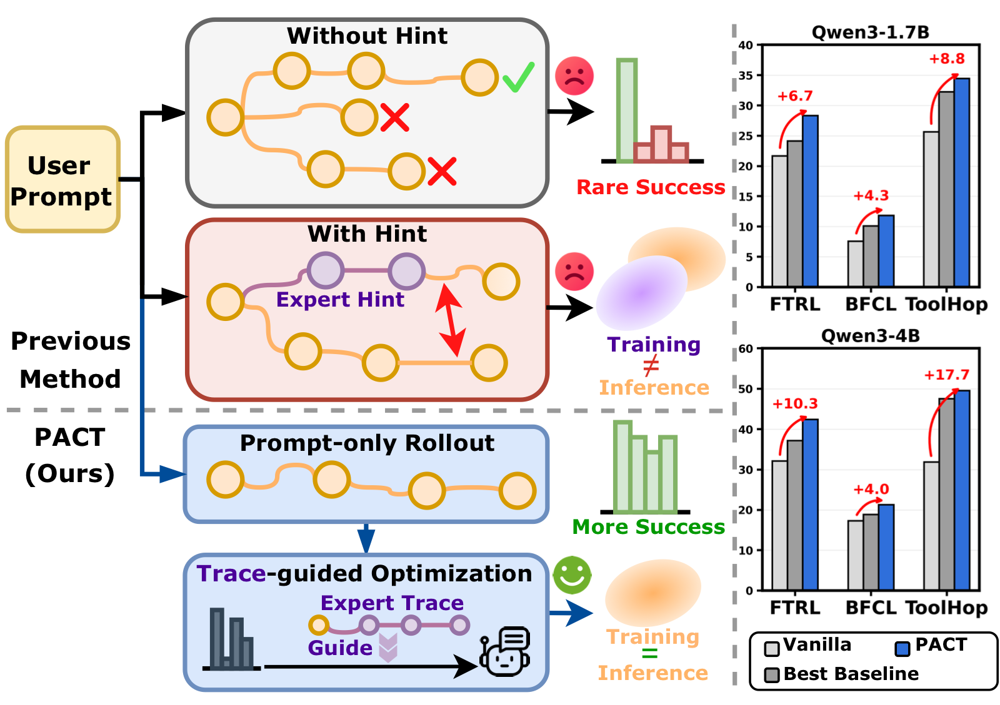
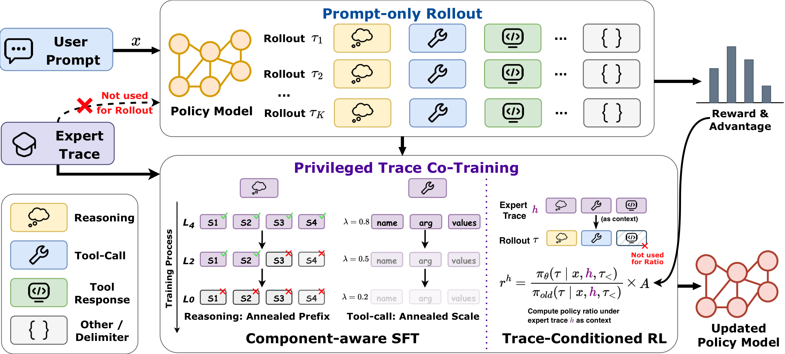

Full-trace SFT can over-imitate
Expert traces are useful, but multi-turn tool-use tasks admit multiple valid paths. Treating a single trace as a fixed target can overfit teacher-specific decisions.
Preprint
* Equal contribution

Multi-turn tool-use agents must reason, call tools, and adapt to observations across several interaction turns. Post-training such agents is challenging, as reinforcement learning often suffers from sparse rewards and weak credit assignment despite matching the prompt-only inference setting, while supervised fine-tuning on expert traces provides dense process supervision but can over-constrain the model to fixed trajectories. To tackle this, we propose PACT, a Privileged trAce Co-Training framework for multi-turn tool-use agents. The key idea is to use expert traces only as training-time optimization signals rather than rollout-time hints. PACT keeps rollout generation prompt-only, then uses expert traces to guide optimization through two complementary signals: a trace-conditioned RL surrogate that evaluates prompt-only rollouts under expert-trace context, and a component-aware SFT loss that supervises reasoning prefixes and tool-calls with annealed strength. To reduce over-reliance on the training-only trace context, PACT further introduces a prompt-only anchoring. We also provide a latent-trace view that connects the two trace-based objectives and explains how expert traces can guide optimization without being used during rollout generation. Experiments on FTRL, BFCL, and ToolHop show that PACT consistently improves over strong SFT- and RL-based baselines, highlighting the value of privileged trace co-training for multi-turn tool-use learning.
Expert traces are useful, but multi-turn tool-use tasks admit multiple valid paths. Treating a single trace as a fixed target can overfit teacher-specific decisions.
Rollout RL matches inference, but sparse trajectory-level rewards give weak credit assignment for intermediate reasoning, tool choices, and arguments.
Using expert traces as rollout hints changes the training input condition. PACT instead reserves traces for optimization while sampling rollouts from the original prompt.
PACT decouples exploration from privileged supervision. The policy samples prompt-only rollouts, scores those rollouts under an expert-trace context, and supervises selected model-controllable parts of the expert trace.

For each prompt, PACT samples rollouts only from the original user prompt, preserving the same input condition used at inference time.
The same prompt-only rollouts are evaluated under a privileged expert-trace context, producing a reward-weighted optimization signal without trace-guided generation.
Reasoning prefixes and complete tool-call spans receive supervised loss, while environment tool responses remain context and are never prediction targets.
PACT improves average performance across FTRL, BFCL, and ToolHop for both evaluated Qwen3 model sizes.
| Method | FTRL | BFCL | ToolHop | Avg | |||||
|---|---|---|---|---|---|---|---|---|---|
| Solve-R | Solve-P | Solve-F1 | Multi-Turn | Search | Memory | Avg | AC | ||
| Qwen3-1.7B | |||||||||
| Vanilla | 21.66 | 20.78 | 19.72 | 13.00 | 1.00 | 8.60 | 7.53 | 25.63 | 19.06 |
| SFT | 22.36 | 17.89 | 17.66 | 13.38 | 2.50 | 8.60 | 8.16 | 23.32 | 17.88 |
| GRPO | 21.57 | 17.37 | 18.13 | 11.88 | 3.50 | 9.25 | 8.21 | 25.13 | 18.08 |
| FTRL | 22.78 | 22.06 | 21.06 | 12.62 | 6.00 | 11.18 | 9.93 | 26.43 | 20.45 |
| ToolRL | 22.79 | 17.93 | 17.99 | 13.30 | 2.50 | 8.39 | 8.06 | 25.83 | 18.52 |
| CHORD | 22.68 | 19.14 | 18.50 | 12.62 | 3.50 | 6.45 | 7.52 | 27.14 | 19.00 |
| MatchTIR | 24.12 | 21.50 | 21.43 | 14.00 | 4.50 | 9.03 | 9.18 | 32.26 | 21.70 |
| SFT→MatchTIR | 23.39 | 19.64 | 19.72 | 13.63 | 5.50 | 11.18 | 10.10 | 31.06 | 20.78 |
| PACT | 28.33 | 26.94 | 22.93 | 14.88 | 7.00 | 13.63 | 11.84 | 34.47 | 24.90 |
| Qwen3-4B | |||||||||
| Vanilla | 32.14 | 31.66 | 28.60 | 23.50 | 12.00 | 16.34 | 17.28 | 31.86 | 28.31 |
| SFT | 28.19 | 29.32 | 24.67 | 22.62 | 4.00 | 12.90 | 13.17 | 30.25 | 25.12 |
| GRPO | 33.12 | 31.80 | 30.84 | 22.00 | 9.00 | 15.48 | 15.49 | 34.47 | 29.14 |
| FTRL | 31.98 | 33.24 | 31.34 | 22.38 | 9.00 | 16.77 | 16.05 | 43.02 | 31.13 |
| ToolRL | 32.59 | 28.98 | 28.28 | 23.00 | 11.00 | 17.42 | 17.14 | 34.27 | 28.25 |
| CHORD | 32.69 | 29.84 | 29.88 | 22.00 | 12.50 | 15.48 | 16.66 | 37.69 | 29.35 |
| MatchTIR | 36.10 | 30.60 | 31.60 | 24.38 | 17.50 | 14.62 | 18.83 | 47.54 | 32.93 |
| SFT→MatchTIR | 37.17 | 30.40 | 32.03 | 23.62 | 17.85 | 13.76 | 18.41 | 47.34 | 33.07 |
| PACT | 42.41 | 34.69 | 36.60 | 27.50 | 18.00 | 18.28 | 21.26 | 49.55 | 36.90 |
Complete main results from the paper. AC denotes Answer Correctness.
@article{du2026pact,
title={PACT: Privileged Trace Co-Training for Multi-Turn Tool-Use Agents},
author={Du, Zhenbang and Luo, Jun and Zheng, Zhiwei and Yuan, Xiangchi and Xia, Kejing and Shi, Dachuan and Jin, Qirui and He, Qijia and Zou, Shaofeng and Liang, Yingbin and Lee, Wenke},
journal={arXiv preprint arXiv:2606.16215},
year={2026}
}